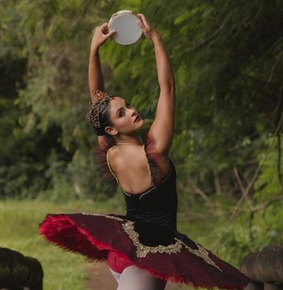

Minha História
Cada bailarino possui uma história única, construída com dedicação, desafios e muitas conquistas.
Sobre mim
Sou Maria Eduarda Lima de Oliveira, nascida em 2007 em Floraí PR. Bailarina formada em Ballet Clássico, com vivência marcante na dança contemporânea, integro o Grupo Municipal de Dança Ponta do Pé, onde me formei e desenvolvi minha base técnica e artística. Acredito na dança como uma forma de expressão transformadora e autêntica. Ao longo da minha trajetória, participei de cursos, apresentações e festivais, sempre buscando evolução como intérprete e compromisso com a arte.
Cada palco, ensaio e desafio fortaleceu ainda mais minha paixão pela dança, proporcionando experiências inesquecíveis e momentos que levarei para toda a vida.
